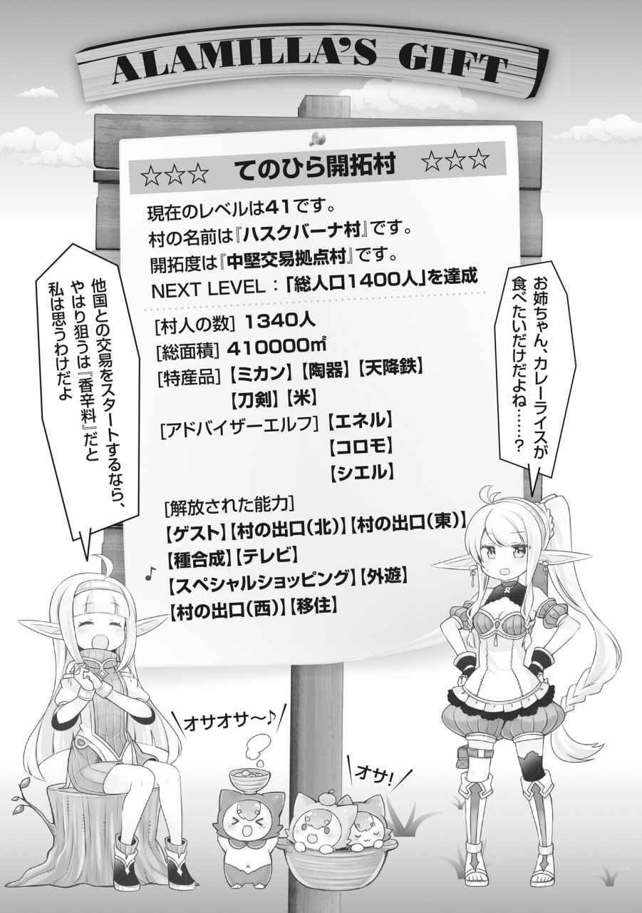

エピローグ
今回の神殿との交渉は、基本的にすべてうまくいった。
本来なら、こんなにうまくいくはずがないのだ。だが、うまくいった。
その理由は一つ。ビーエがすべて本当のことを言っていたからだ。あの男から情報を得られていなければ、こうはいかなかっただろう。
俺はレンと二人でビーエのところを訪れていた。
どうしてか、気になった。心の中で棘のように、引っ掛かっていた。
「ビーエ。お前に一つだけ訊いておきたいことがある」
「なんでも訊いてください。そういえば、神殿との交渉はどうなりました？ 私、解放してもらえるんですか？ もうオサオサだけは勘弁願いたいんですけれど」
「交渉はお前のおかげでうまくいったよ。教皇からの認可状まで貰った」
「それは凄い！ 私の情報程度で、神殿相手に譲歩を引き出すとは、やはり私の人を見る目は確かということですね！ それで、私の解放は」
「お前は殺したことにした。俺たちが情報を持っていると知られると面倒だったからな。代わりに島では基本的に好きなように過ごしていい。見張りは付けるがね」
「なるほど。まあ、それなら問題ありません」
やはりビーエは読めない男だった。生きること自体には執着があるようなのに、それ以外のことには全く執着がない。俺にとってビーエは宇宙人だった。
「それで訊きたいこととは？」
ビーエのほうから話を振ってきた。
「もしかしたら、大したことではないのかもしれないが……。お前は、なぜ嘘をついたり黙秘したりせず、なにもかも俺たちに喋った？ 死にたくないからか？ だが、お前は俺たちがお前を殺すことはないと、なんとなくわかっていたはずだ」
「そうですね。あなたは私を絶対に殺さない。確信がありましたよ。正義の人」
「では、なぜだ？ お前は職務に忠実なタイプのはずだ。……繋がらないんだよ」
ビーエは、深いため息をついた。
「私が嘘を言わない理由……ですか。最初に言ったと思いますが、私は『運命の神』の祝福者で、未来の世界が見えている。そして、運命というのは、私がなにか喋ったところで、変わるものではありません。大勢に影響がない。なにもかも、その未来の前には無力……」
そう前置きし、ビーエは表情を消した。それは、予想していなかった答えだった。
「どうせ、近いうちにこの世界は滅びる。その運命から逃れるすべはないからですよ」
